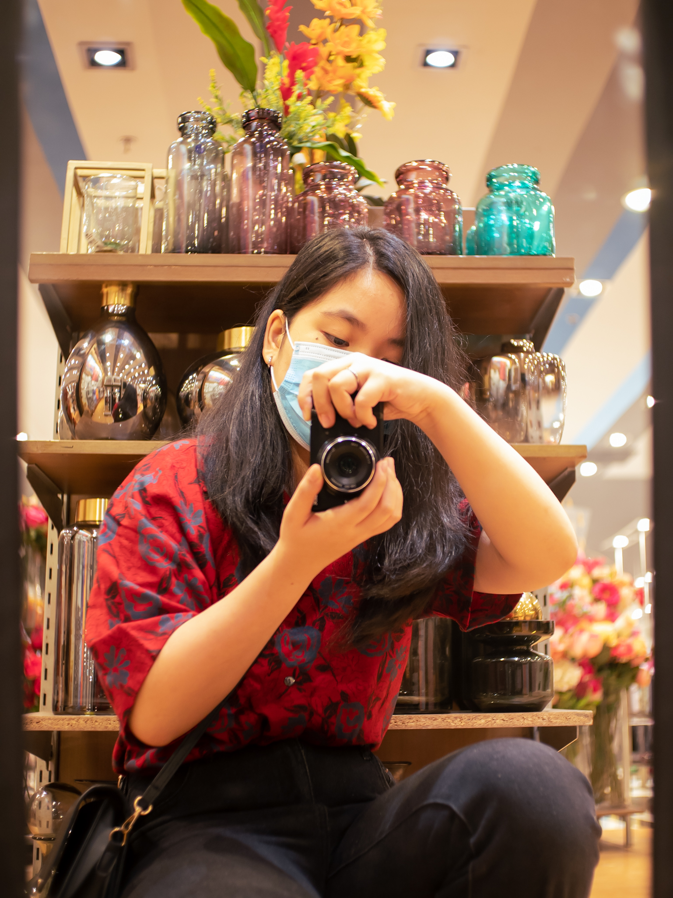
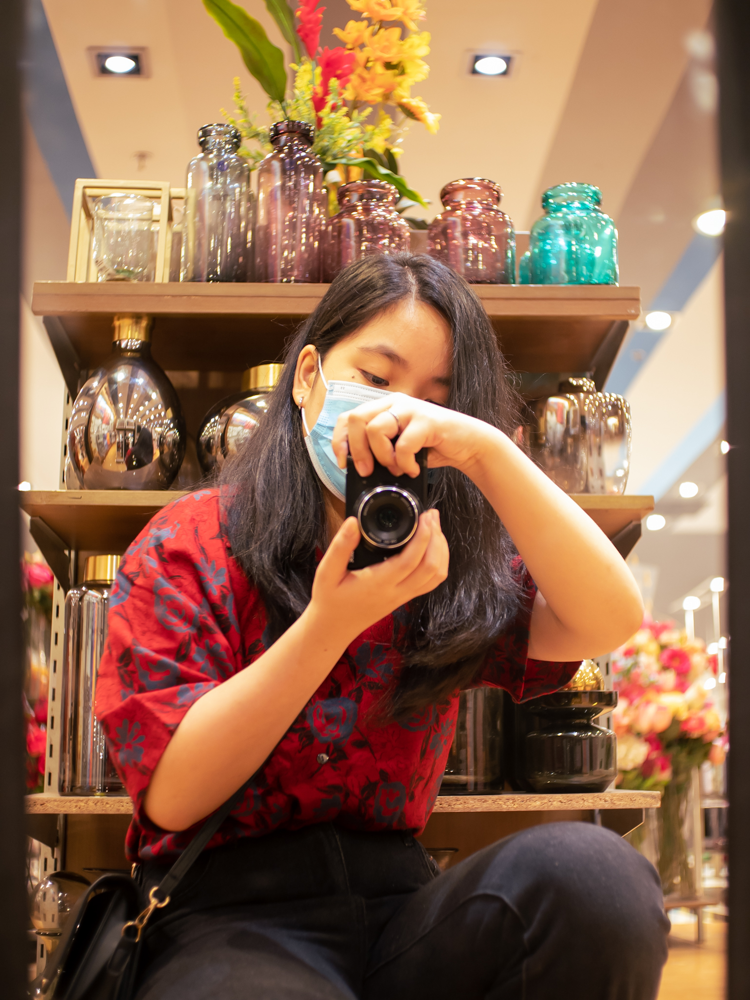

My hobbies are photography and videography. I got into photography because I felt inspired by how calming it feels to take pictures. Plus learning about the intricacies of using a camera overall is really fun. There is no pressure to know how to use it immediately. It feels like anyone can like it immediately. It feels really nice when people ask me to take pictures for them. And what I like about it the most is when I get to take a look at all my captures. It feels like I can just enjoy it without the pressure of being perfectly good at it. At least it takes off my worries and helps me enjoy myself. I really enjoy it the most when I see all of my captures and I feel super content about it.

 
